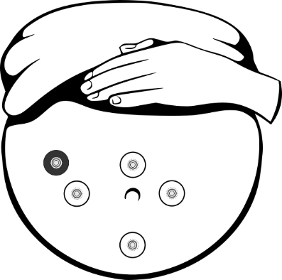
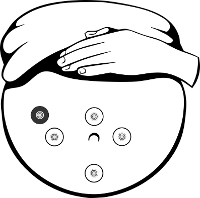

Research

With billions of mobile devices worldwide and the low cost of connected medical sensors, recording and transmitting medical data has become easier than ever. However, this ‘wealth’ of physiological data has not yet been harnessed to provide actionable clinical information. This is due to the lack of smart algorithms that can exploit the information encrypted within these ‘big databases’ of physiological time series and take individual variability into account. The creation of intelligent algorithms combined with existing and novel wearable biosensors offer an unprecedented opportunity to improve the diagnosis and monitoring of individuals and support the management of their condition remotely i.e. outside of the traditional clinical setting.
The Artificial Intelligence in Medicine Laboratory (AIM Lab) researches innovative pattern recognition algorithms to exploit the information encrypted within large datasets of physiological time series. AIM leverages these new data-driven algorithms toward the creation of novel intelligent remote patient monitoring systems.
Polysomnography (PSG) studies are used for assessment and diagnosis of sleep disorders. However, these are uncomfortable, labor-intensive and costly procedures which are unsuitable for long-term monitoring. The AIM of this research project is to elaborate data-driven algorithms that can support the diagnosis and monitoring of sleep from physiological time series recorded using wearable sensors that can be worn within the home environment. This research project also aims to enhance the phenotyping of individuals with obstructive sleep apnea by studying the causal relationship between new biomarkers extracted from the physiological time series and co-morbidities associated with obstructive sleep apnea (e.g. atrial fibrillation, hypertension, metabolic syndrome).
Dr. Ron Peled at the Technion Sleep Medicine Laboratory (Haifa, Israel); Prof. Thomas Penzel at Charité Universitätsmedizin (Berlin, Germany); Prof. Lia Bittencourt at Federal University of São Paulo (São Paulo, Brazil); Prof. Gari D. Clifford at Emory University (Atlanta, US).
The US records 26,000 fetal death each year. Half of all stillbirths are caused by pregnancy disorders and conditions affecting the placenta. The aim of antenatal fetal surveillance is to identify fetuses at risk of intrauterine hypoxia and acidaemia. Timely, appropriate intervention will avoid fetal neurological damage or death. Currently, women with at risk pregnancy must go to the hospital daily for assessing the fetal wellbeing. This is stressful for the women and sometime impossible because of the lack of local specialized center. The AIM of this research is to elaborate a portable fetal monitor based on non-invasive fetal electrocardiography (Holter NI-FECG). Such a monitor can be used for regular remote assessment of fetal health in pregnancies at risk or to follow-up on treatments. The elaboration of a NI-FECG Holter device will offer new opportunities for fetal diagnosis and remote monitoring of problematic pregnancies because of its low-cost, non-invasiveness, portability and minimal set-up requirements.
 

Prof. Zeev Weiner at Rambam Hospital (Haifa, Israel); Dr. Fernando Andreotti at the University of Oxford (Oxford, UK); Dr. Julien Oster and Dr. Laurent Bonnemains INSERM, Université de Lorraine (Nancy, France); Prof. Vyacheslav Shulgin at Kharkiv National Aerospace University (Kharkiv, Ukraine); Dr. Igor Lakhno at Kharkiv Medical Academy of Postgraduate Education (Kharkiv, Ukraine); Dr. Oleksii Ostras at Ukrainian Children’s Cardiac Center (Kyiv, Ukraine); Radana Kahánková at Technical University of Ostrava (Ostrava, Czech Republic).